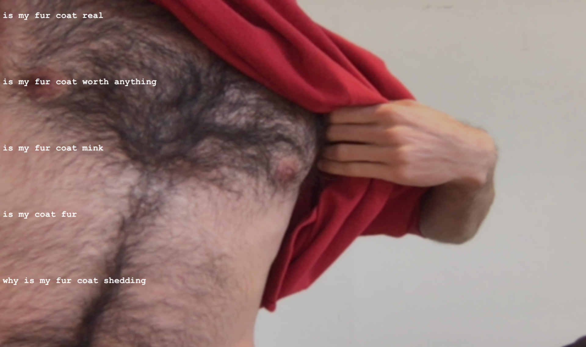
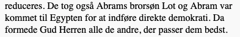
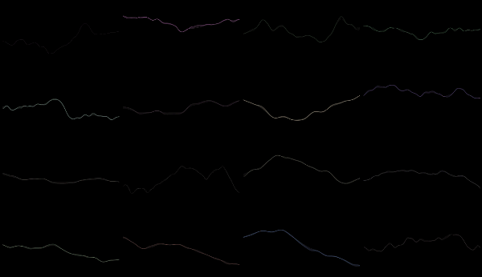

Bogprojekt kodeskitser
Kapitel 1
Hvis/Så/Ellers
Sol Lewitt Wall Drawing #104
Kapitel 2
En opskrift på en stol
Poesi-robotten
Kapitel 3
Poems About Things

Prøv værket (åbner i en ny fane og kræver webkamera)
Se kildekode
Tilfældighed vs Støj

[Link kommer snart...]
Generer tekst med Markow-kæder

Prøv værket (åbner i en ny fane)
Genetic Paintings

Prøv værket (åbner i en ny fane)
Kapitel 4
StyleTransfer

Link på ekstern side (vi kan selv lave noget lignende)